ParticleProcessMaterial 2D Usage
Process material properties
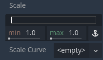
Min, max, and curve properties
The properties in this material control how particles behave and change over their lifetime.
A lot of them have Min, Max, and Curve values that allow you to fine-tune
their behavior. The relationship between these values is this: When a particle is spawned,
the property is set with a random value between Min and Max. If Min and Max are
the same, the value will always be the same for every particle. If the Curve is also set,
the value of the property will be multiplied by the value of the curve at the current point
in a particle's lifetime. Use the curve to change a property over the particle lifetime. Very
complex behavior can be expressed this way.
Note
This page covers how to use ParticleProcessMaterial for 2D scenes specifically. For information on how to use it in a 3D scene see Process material properties.
Lifetime Randomness
The Lifetime Randomness property controls how much randomness to apply to each particle's
lifetime. A value of 0 means there is no randomness at all and all particles live for
the same amount of time, set by the Lifetime property. A value of 1 means
that a particle's lifetime is completely random within the range of [0.0, Lifetime].
Particle Flags
Spawn
Angle
Determines the initial angle of the particle (in degrees). This parameter is mostly useful randomized.
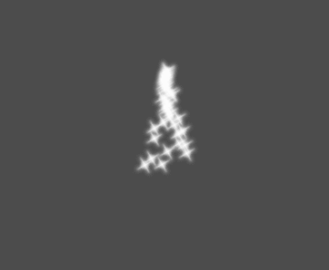
Velocity
Direction
This is the base direction at which particles emit. The default is
Vector3(1, 0, 0) which makes particles emit to the right. However,
with the default gravity settings, particles will go straight down.
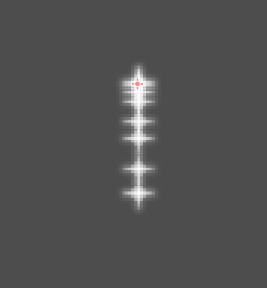
For this property to be noticeable, you need an initial velocity greater than 0. Here, we set the initial velocity to 40. You'll notice that particles emit toward the right, then go down because of gravity.
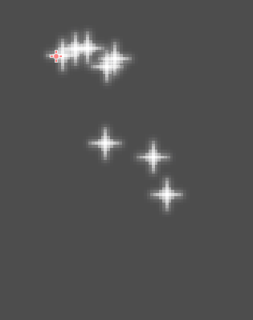
Spread
This parameter is the angle in degrees which will be randomly added in
either direction to the base Direction. A spread of 180 will emit
in all directions (+/- 180). For spread to do anything the "Initial Velocity"
parameter must be greater than 0.
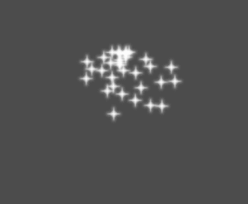
Flatness
This property is only useful for 3D particles.
Initial Velocity
Initial velocity is the speed at which particles will be emitted (in pixels/sec). Speed might later be modified by gravity or other accelerations (as described further below).

Animated Velocity
Angular Velocity
Angular velocity is the speed at which particles rotate around their center (in degrees/sec).
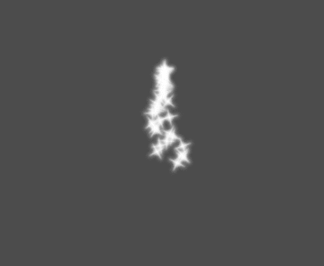
Orbit Velocity
Orbit velocity is used to make particles turn around their center.

Accelerations
Gravity
The gravity applied to every particle.
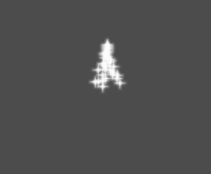
Linear Acceleration
The linear acceleration applied to each particle.
Radial Acceleration
If this acceleration is positive, particles are accelerated away from the center. If negative, they are absorbed towards it.
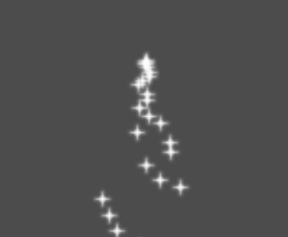
Tangential Acceleration
This acceleration will use the tangent vector to the center. Combining with radial acceleration can do nice effects.
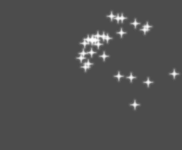
Damping
Damping applies friction to the particles, forcing them to stop. It is especially useful for sparks or explosions, which usually begin with a high linear velocity and then stop as they fade.

Display
Scale
Determines the initial scale of the particles.

Color Curves
Color
Used to change the color of the particles being emitted.
Hue Variation
The Variation value sets the initial hue variation applied to each
particle. The Variation Random value controls the hue variation
randomness ratio.
Animation
Note
Particle flipbook animation is only effective if the CanvasItemMaterial used on the GPUParticles2D or CPUParticles2D node has been configured accordingly.
To set up the particle flipbook for linear playback, set the Speed Min and Speed Max values to 1:
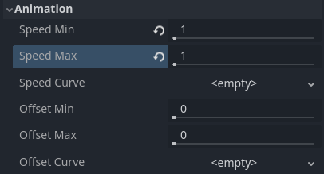
Setting up particle animation for playback during the particle's lifetime
By default, looping is disabled. If the particle is done playing before its lifetime ends, the particle will keep using the flipbook's last frame (which may be fully transparent depending on how the flipbook texture is designed). If looping is enabled, the animation will loop back to the first frame and resume playing.
Depending on how many images your sprite sheet contains and for how long your particle is alive, the animation might not look smooth. The relationship between particle lifetime, animation speed, and number of images in the sprite sheet is this:
Note
At an animation speed of 1.0, the animation will reach the last image
in the sequence just as the particle's lifetime ends.
If you wish the particle flipbook to be used as a source of random particle textures for every particle, keep the speed values at 0 and set Offset Max to 1 instead:

Setting up particle animation for random offset on emission
Note that the GPUParticles2D node's Fixed FPS also affects animation playback. For smooth animation playback, it's recommended to set it to 0 so that the particle is simulated on every rendered frame. If this is not an option for your use case, set Fixed FPS to be equal to the effective framerate used by the flipbook animation (see above for the formula).
Emission Shapes
ParticleProcessMaterials allow you to set an Emission Mask, which dictates the area and direction in which particles are emitted. These can be generated from textures in your project.
Ensure that a ParticleProcessMaterial is set, and the GPUParticles2D node is selected. A "Particles" menu should appear in the Toolbar:

Open it and select "Load Emission Mask":

Then select which texture you want to use as your mask:
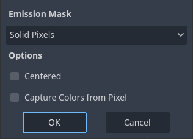
A dialog box with several settings will appear.
Emission Mask
Three types of emission masks can be generated from a texture:
Solid Pixels: Particles will spawn from any area of the texture, excluding transparent areas.

Border Pixels: Particles will spawn from the outer edges of the texture.

Directed Border Pixels: Similar to Border Pixels, but adds extra information to the mask to give particles the ability to emit away from the borders. Note that an
Initial Velocitywill need to be set in order to utilize this.
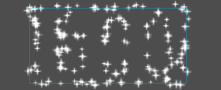
Emission Colors
Capture from Pixel will cause the particles to inherit the color of the mask at their spawn points.
Once you click "OK", the mask will be generated and set to the
ParticleProcessMaterial, under Spawn and then Position
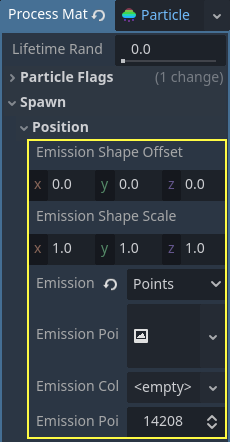
All of the values within this section have been automatically generated by the "Load Emission Mask" menu, so they should generally be left alone.
Note
An image should not be added to Point Texture or Color Texture directly.
The "Load Emission Mask" menu should always be used instead.
Customizing the process material
If you need to change or implement new behaviors in shader code, you can do so by converting the current ParticleProcessMaterial to a ShaderMaterial. Existing properties are preserved by the conversion process. Features that are enabled will also affect what's present in the converted shader code.
To do so, right-click on the material in the FileSystem dock and choose Convert to ShaderMaterial. You can also do so by right-clicking on any property holding a reference to the material in the inspector.